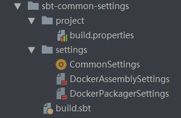
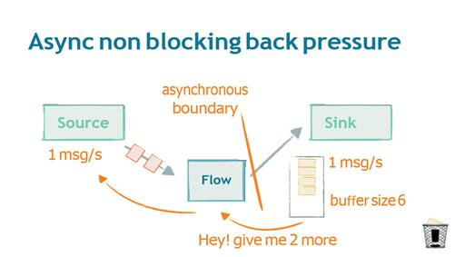

Scala学习记录
Contents
总结
scala接触语法 -> sbt配置 -> actor（消息模式） -> cluster(分布式集群) -> stream（响应式流计算） -> scalaz(scalaJs)
需求来源
相比java来说，scala最大的优点和缺点都是太过于灵活，其中语法糖的设计处处都体现了它为异步而生，相比同步调用而言，异步可以更大限度地利用CPU和IO资源
初识
首次知道scala是在2016年底，由hadoop开始了解到spark，认识到scala语言，在当时接下来的一年的时间里，初步了解了基本语法，并在此基础在zeppelin[后来发现，这是个不错的单用户GraphQL，仅仅是单用户]里写spark的执行语句，并在此基础上了解了CNN的一些基础知识。当时在公司里做了一期Scala的基础介绍[笑cry]
- https://docs.huihoo.com/scala/docs.scala-lang.org/zh-cn/cheatsheets/
- http://blog.javachen.com/2015/04/20/basic-of-scala.html
以上两篇文章是对Scala基础语法很好的概括。
sbt配置
- 再次拿起是在17年末，看到有人尝试用akka的Route写WEB-MVC，发现对jdbc的插入速度很快[没有事务，当然会快]， 于是这这个基础上快速了解了sbt的配置手法
- 经过总结，配置一般分为三段式，dependency-version/plugin/package-release-push,后面会出文章详细介绍。
以akka的框架为例子可以看到
dependency-version
- Dependencies.scala主要写写依赖的jar包，一般情况会clean-dependency删除需要进行统一版本的依赖，然后从单个dep-item组装成小型Seq[ModuleID]，比如logging组，spark组，hadoop组，然后通过组拼接成每个工程需要的依赖。由于配置是纯代码式，所以我们可以批量进行依赖的删除。
以下是Version.scala
object Versions {
val Akka = "2.5.11"
val AkkaStreams = "2.5.11"
val AkkaStreamsKafka = "0.19"
val AkkaHTTP = "10.1.0"
val JDK = "1.8"
val JodaConvert = "2.0"
val JodaTime = "2.9.9"
val Json4s = "3.5.3"
val Kafka = "1.0.0"
val Logback = "1.2.3"
val Scala = "2.11.11"
val squbsV = "0.9.3"
val scalaTestV = "3.0.5"
val slickVersion = "3.2.3"
val circeV = "0.9.3"
val sttpV = "1.1.13"
}
以下是Dependencies.scala片段
import sbt._
import Versions._
object Dependencies {
val squbsUn = "org.squbs" %% "squbs-unicomplex" % squbsV
val squbsTeskit = "org.squbs" %% "squbs-testkit" % squbsV % Test
val squbsPipline = "org.squbs" %% "squbs-pipeline" % squbsV
val squbs = Seq(squbsUn, squbsTeskit, squbsPipline).map(_.excludeAll(ExclusionRule(organization = "com.typesafe.akka")))
val clientHTTP = logging ++ akka ++ json ++ squbs
}
plugin
这里我们可以写所有模块可能需要的依赖
以下是plugins.sbt
logLevel := Level.Warn
resolvers += Resolver.sonatypeRepo("releases")
resolvers += "Bintray Repository" at "https://dl.bintray.com/shmishleniy/"
addSbtPlugin("com.eed3si9n" % "sbt-assembly" % "0.14.6")
addSbtPlugin("com.typesafe.sbt" % "sbt-native-packager" % "1.3.4")
addSbtPlugin("se.marcuslonnberg" % "sbt-docker" % "1.5.0")
addSbtPlugin("net.virtual-void" % "sbt-dependency-graph" % "0.9.2" )
lazy val root = project.in( file(".") ).dependsOn(RootProject(file("./sbt-common-settings").toURI))
在sbt-common-settings文件夹中我们像正常工程一样编写

- 重点在commons-setting里，我们编写了两种打包方式assembly[tar.gz]和package[war、jar]
- 何种打包方式并不是重点，模式可以确定。
- 编写基础镜像[包含监控汇报、时区控制、基础镜像选择、启动脚本]，然后将打出的包放置到镜像合适的位置，启动脚本即可启动服务。
- 然后针对不同的包，我们的启动脚本不同，比如tar.gz包我们可以将其解压缩放置在固定目录，进行启动，并将日志通过合适方式进行收集[推荐ELK]
整合插件和项目依赖
import Dependencies._
version in ThisBuild := CommonSettings.version
organization in ThisBuild := CommonSettings.organization
scalaVersion in ThisBuild := Versions.Scala
crossScalaVersions := Seq(Versions.Scala, "2.12.5")
val paradiseVersion = "2.1.0"
val buildSettings = Defaults.coreDefaultSettings ++ Seq(
organization := CommonSettings.organization,
scalacOptions ++= Seq(Versions.Scala, "2.12.5"),
scalaVersion := Versions.Scala,
crossScalaVersions := Seq( Versions.Scala, "2.12.5"),
resolvers += Resolver.sonatypeRepo("snapshots"),
resolvers += Resolver.sonatypeRepo("releases"),
scalacOptions := Seq(
"-feature",
"-encoding", "UTF-8"
),
addCompilerPlugin(
"org.scalamacros" % "paradise" % paradiseVersion cross CrossVersion.full)
)
lazy val protobufs = (project in file("./protobufs"))
.settings(buildSettings)
.settings(
//同时打出2.11和2.12包
scalacOptions ++= Seq("2.12.5", Versions.Scala),
PB.targets in Compile := Seq(
scalapb.gen() -> (sourceManaged in Compile).value
))
lazy val recommendStream = DockerProjectSpecificPackagerPlugin.sbtdockerPackagerBase("stream", stage, executableScriptName)("./stream-spring")
.enablePlugins(JavaAppPackaging)
.settings(buildSettings)
.settings(
mainClass in Compile := Some("com.lightbend.Main"),
libraryDependencies ++= springStream,
bashScriptExtraDefines += """addJava "-Dconfig.resource=cluster.conf""""
)
.dependsOn(protobufs)
Actor
网络上能搜到的ppt和pdf比较多[google actor filetype:ppt]，能了解到的主要是Actor的特点，这里无需多讲。
由于Actor的分布式特点，我们可以通过cluster和cluster-sharding组件，将消息发送到指定的集群，由集群自行处理
适用场景
状态式计算
- 工作流程类 [订单流转类、事务审批类、打车状态类]
- 即时聊天类 [Actor快速传递消息]
- 并发事务类 [支付系统、交易系统]
Akka 适用场景
有人总结出以下适用场景，第三条只从并发并行考虑是充分的，实际上并不是。
- 事务处理 (在线游戏，金融/银行业，贸易，统计，社会媒体，电信)；
- 服务后端 (任何行业，任何应用)，提供REST、SOAP、Cometd、WebSockets 等服务，作为消息总线/集成层 垂直扩展，水平扩展，容错/高可用性；
- 并发/并行 (任何应用)，运行正确，方便使用，只需要将jar包添加到现有的JVM项目中；
- 仿真，主/从，计算网格，MapReduce等等；
- 通信Hub (电信、Web媒体、手机媒体)；
- 游戏 (MOM、在线游戏)；
- 商业智能/数据挖掘/通用数据处理；
- 复杂事件流处理。
Akka Stream

适用场景
- 流水日志类
Akka Stream整合
- 由于最近一直思考流计算系统应该怎么样做，才想到应该怎么样整合 Akka Stream 和 Actor，后者主要用于耗时的IO操作或者说是第三方系统的交互。
- 比如源源不断的日志数据流接收进来后，我们可以按照业务分为几大类，比如用户操作行为[行为分类，涉及产品和模块ID]、用户信息更新[地理位置变化、设备信息变化、登录信息变化]。底层存储数据是Cassandra，适合10G-1000G的数据，rowkey设计为year+month。
- 具体数据结构的设计按下不表，并不是普适结构。
- 接受行为日志数据之后，我们按照产品的特定ID分发给不同的订阅者，订阅者需要提供订阅条件[比如会话窗口、时间窗口], 使用定时器通知订阅者到nosql取日志数据进行查询并计算，这样避免了总路由需要缓存所有消息，也避免了总路由无法拓展的问题。
策略
- 所有数据处理器按照特定模式进行日志的订阅，订阅者会收到订阅的消息的激发计算的通知，收到通知后，订阅者需要去cassandra进行消息的读取并计算[重复读取不会给cassandra造成过大压力，或者将该部分热数据内存化]
- 全局定时器单结点，接收路由发送的日志ID消息，为每一个数据标签建立待计算的日志ID缓存【akka-persistent】,以及上一次的计算结果和计算时间，并从数据库加载计算激发策略。
- 每次的计算结果+计算时间都会持久化，计算结果 = 阶段数据 + 上一次的数据结果
- 计算Actor无数据，或者说Flow只进行计算，Sink负责落地，并将结果数据发送到单结点定时器，计算结果的更新会激发其它数据标签的更新
graphStage是计算结点
消息类型
- 日志消息结构体 {持久化ID} route->timer
- (Tag-ID, calculate-time) 用于通知关联的数据标签 graphStage-> timer(puber) -> timer(suber)
- 日志消息结构体 {list[持久化ID]} timer(suber) -> graphStage